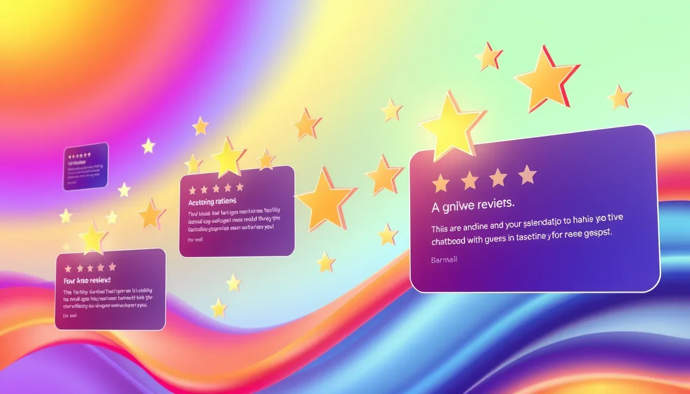
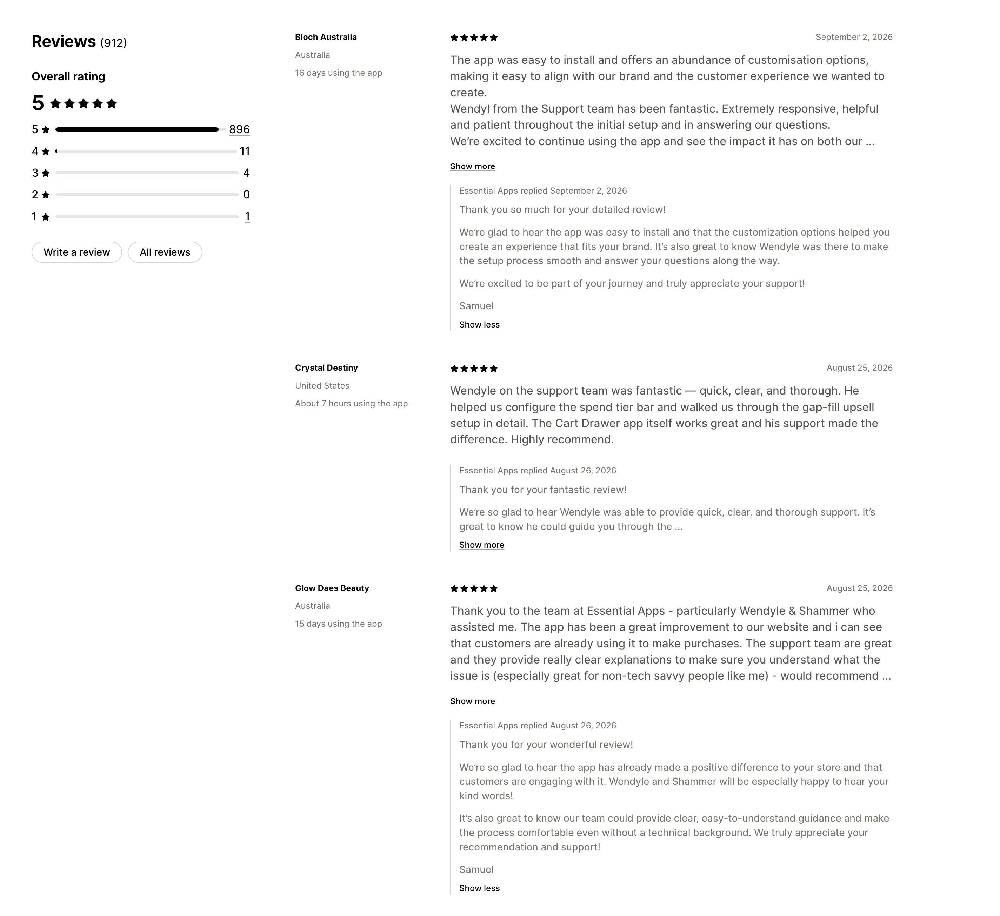
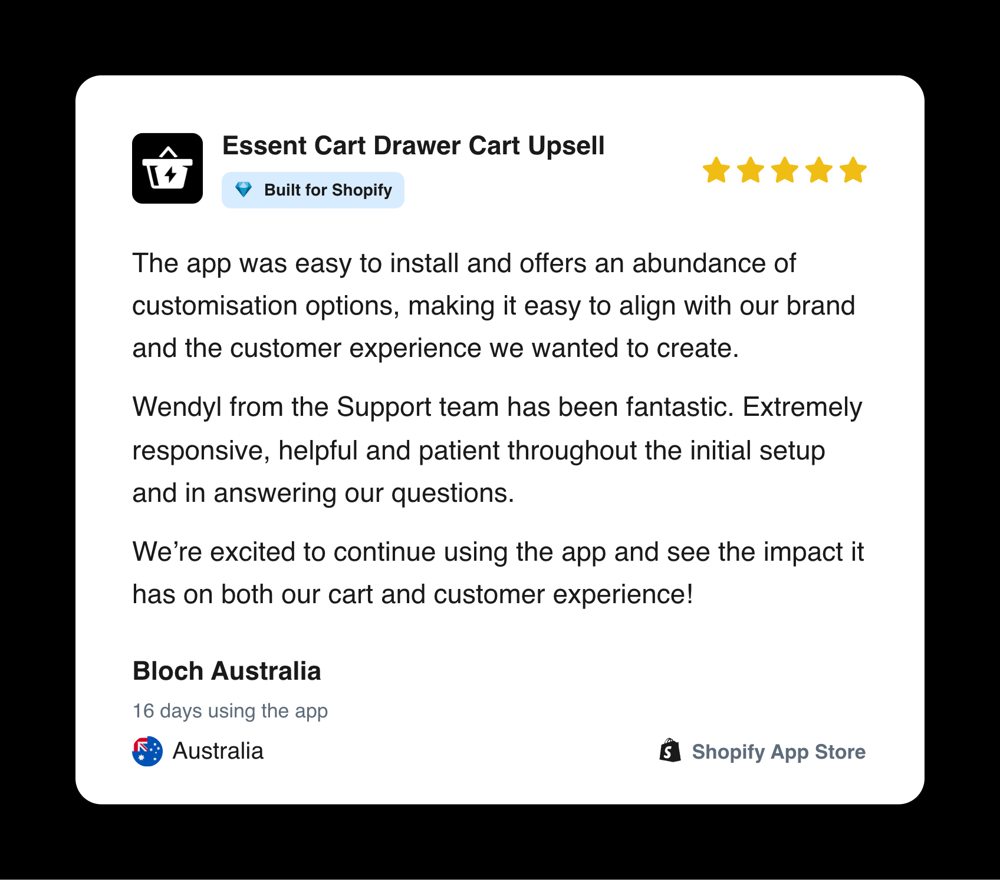
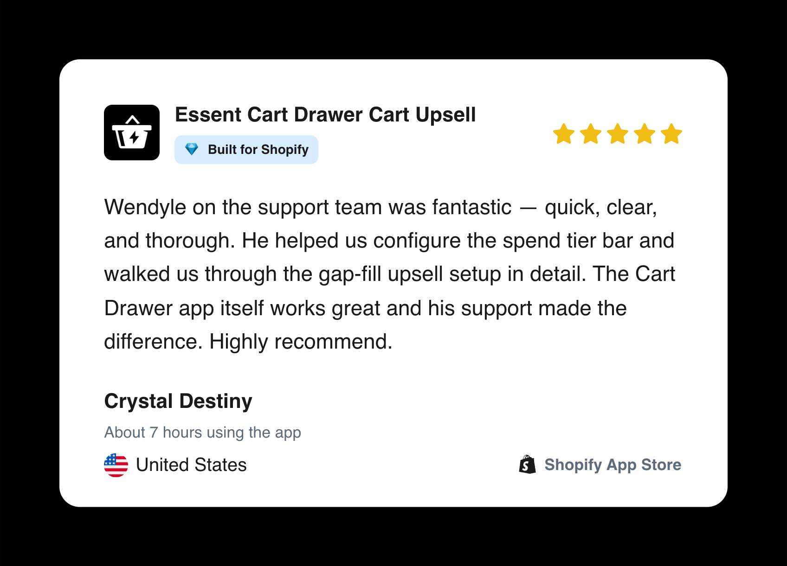
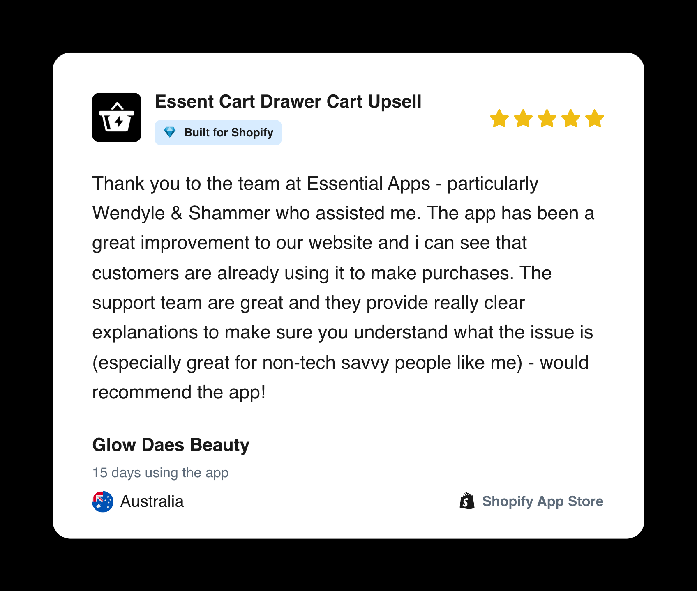

What Shopify App Reviews Reveal About Great Technical Support
Three merchant reviews show how responsiveness, clarity, patience, and practical guidance shape useful Shopify app support.

When merchants browse the Shopify App Store, they are not only comparing features and pricing. They are also reading Shopify app reviews to understand what happens after installation, especially when they need help.
That is one reason customer feedback matters so much to me as a technical support specialist. A review can reveal whether a merchant received a fast reply, but more importantly, whether the support interaction actually helped them move forward.
Several reviews left by merchants I supported highlight the same themes again and again: responsiveness, clarity, patience, practical guidance, and a strong understanding of what the merchant was trying to accomplish.
Rather than treating those reviews as simple ratings, I see them as useful evidence of what great Shopify app customer support should look like in practice.

Three Shopify App Reviews That Shaped How I Think About Support
Responsive and patient support during setup: Bloch Australia
Bloch Australia highlighted the app's customization options, but their review also focused heavily on the support experience during the initial setup.

“Wendyl from the Support team has been fantastic. Extremely responsive, helpful and patient throughout the initial setup and in answering our questions.”
For me, this captures an important part of Shopify merchant support: setup is often where merchants form their first real impression of both the app and the team behind it.
A technically correct answer is not always enough. During onboarding, a merchant may still be learning how the app works, how it interacts with their theme, and which configuration is right for their store.
Good support therefore needs to combine product knowledge with patience. The goal is not simply to answer a question, but to make the setup process feel manageable and help the merchant reach the outcome they originally installed the app for.
Clear, thorough guidance for app configuration: Crystal Destiny
Crystal Destiny's review focused on a more configuration-heavy support interaction.

“Wendyle on the support team was fantastic — quick, clear, and thorough. He helped us configure the spend tier bar and walked us through the gap-fill upsell setup in detail.”
This is the kind of feedback I value because it reflects more than response speed.
In Shopify technical support, merchants often do not need a generic help-center answer. They need someone to understand their current configuration, explain how a feature works in their specific use case, and guide them through the setup in a way they can reproduce later.
Clear technical communication is therefore a real technical skill. The better I understand the system, the easier it becomes to explain the relevant part without overwhelming the merchant with unnecessary detail.
The aim is not to sound technical. The aim is to make the technical path clear enough that the merchant can confidently move forward.
Making technical issues understandable: Glow Daes Beauty
Glow Daes Beauty described another part of support that I consider essential.

“The support team are great and they provide really clear explanations to make sure you understand what the issue is (especially great for non-tech savvy people like me).”
Technical support often sits between complex systems and people who should not need to become developers just to use a product successfully.
That is especially true in the Shopify ecosystem. A merchant may be dealing with an app, theme, cart drawer, discount logic, product configuration, or another integration at the same time. Their real question is usually not “What does this code do?” It is “Why is this not working the way I expected, and what do I need to do next?”
A strong technical support specialist has to translate the diagnosis into language that matches the customer's level of technical knowledge while keeping the explanation accurate.
That ability to simplify without becoming vague is one of the most valuable parts of technical customer support.
What These Shopify App Reviews Have in Common
Responsiveness matters, but resolution matters more
Fast replies reduce uncertainty, but speed alone does not solve a merchant's problem.
The better measure of support is whether the merchant understands the next step, can complete the configuration, or has a clear path toward resolution.
Clarity is part of technical expertise
Knowing the answer and communicating the answer are different skills.
In Shopify app support, an explanation needs to be technically accurate while still being usable by a merchant who may not know HTML, CSS, JavaScript, Liquid, APIs, or the internal architecture of an app.
Support is part of the product experience
For many SaaS and Shopify apps, a merchant's experience with the product includes the support they receive when something becomes confusing or breaks.
A useful app with difficult support can still create frustration. Strong support helps merchants get more value from the features they already have.
The merchant's business goal matters
A support ticket may mention a button, cart drawer, discount, upsell, or configuration setting, but the underlying goal is usually commercial.
The merchant may be trying to increase average order value, improve the cart experience, launch a promotion, prevent an incorrect purchase flow, or make a feature easier for customers to understand.
Understanding that goal leads to better support than treating every ticket as an isolated technical question.
Great support reduces unnecessary back-and-forth
One of my priorities in technical support is to move toward one-touch resolution whenever the situation allows it.
That means giving the customer a complete answer: what is happening, why it is happening, what to change, what result to expect, and what to do if the expected result does not occur.
The objective is not simply to close a ticket quickly. It is to reduce customer effort while maintaining technical accuracy.
How Technical Support Affects Shopify App Reviews
Positive Shopify reviews should not be the purpose of a support interaction. The purpose is to help the merchant.
Reviews are better viewed as an outcome of the overall customer experience. When merchants repeatedly mention responsiveness, patience, clarity, or effective problem-solving, that feedback can help a support team understand which behaviors customers genuinely value.
Likewise, critical reviews can reveal friction in onboarding, product design, documentation, or the support process itself.
Used this way, customer reviews become more than reputation signals. They become another source of product and support feedback.
Shopify App Support Best Practices I Try to Follow
My own support approach can be summarized as:
Understand → Reproduce → Inspect → Isolate → Resolve → Verify → Explain
Understand
Clarify what the merchant expected, what actually happened, and what business outcome they are trying to achieve.
Reproduce
When possible, recreate the issue instead of relying only on assumptions.
Inspect
Review the relevant app configuration, storefront behavior, browser console, network activity, theme code, product settings, or integration state.
Isolate
Determine whether the behavior comes from the app, the Shopify theme, Shopify itself, custom code, configuration, or another third-party integration.
Resolve
Apply or recommend the smallest reliable fix that addresses the actual cause.
Verify
Confirm that the expected behavior now works, rather than assuming a configuration change solved the problem.
Explain
Tell the merchant what happened and what was changed in language that is useful to them.
This process is not required for every simple question, but it reflects the mindset I try to bring to more technical cases. My Essential Apps Support Guide case study shows how I organize this kind of support workflow.
What Great Shopify App Customer Support Looks Like to Me
The reviews above reinforce something I have learned repeatedly while supporting Shopify merchants: great technical support is not just about knowing the product.
It is the combination of technical knowledge, investigation, communication, patience, ownership, and understanding what the customer is actually trying to accomplish.
A five-star review is encouraging, but the most valuable part is often the detail inside it.
When a merchant says the support was clear, thorough, responsive, patient, or easy to understand, that feedback describes the kind of technical support experience I want to keep delivering.